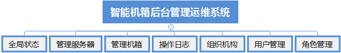

方案简介
智能机箱后台管理运维系统是针对智能交通行业的解决方案，基于ITSS标准，实现了对资源、人员、流程、技术四大方面的闭环管理，有效降低交通混乱和无人管的现象；实现了交通设备的故障及时发现和处理，保障了设备设施的高可用性；实现了对服务单位、服务人员的有效监管、评价考核。
方案优势
•轻松掌握全局 •快速定位故障 •可视运维管理 •简洁数据接入 •智能分析研判
功能明细
•数据接入系统
针对不同时期建设、不同厂家建设、不同厂家生产的视频监控设备，系统提供通用化的设备接入平台，实现主流厂商设备的快速、简捷接入，支撑多元设备、数据的一体化运维管理。接入数据质量可进行自动诊断及挖掘分析，经过清洗、校准的数据实现集中管理、分析，形成中心的数据大脑，为故障诊断分析、关联应用提供基础数据。设备接入：直接对该设备SDK，实现主要设备主流厂家的快速接入，确保实现不同厂家设备统一运维。外场设备（7类）：电警、卡口、视频监控、信号、车载机、检测器、诱导屏。内场设备（5类）：服务器、网络设备、中间件、数据库、动环系统。系统接入：对于第三方系统、数据库、数据文件通过可视化的配置界面，按照协议要求配置，即可实现快速接入，无需二次开发。数据质量分析：数据对接过程中，对于常见的数据源传输不稳定、数据不规范（超长、类型不符等）影响数据质量的因素进行自动分析，并可自动出具报表和自动邮件提醒，指导对接双方快速完善。
•故障检测系统
“一平台”通过打造自动化的故障诊断平台，提高运维效率。利用自动和人工多种检测方式，实现设备设施故障的及时发现，提高设备的可用率。构建故障快速发现、及时响应机制，提高整体运维效果。故障发现准确率达到100%，设备降效达到90%以上。视频质量诊断：能够检测视频图像的信号缺失、清晰度异常、亮度异常、画面偏色、条纹干扰、雪花噪声、视频冻结、异物遮挡等10余种故障。设备在线诊断：基于设备链路关系，对设备的在线情况进行实时诊断并记录，形成24小时设备在线明细及在线率分析报表，实现对设备在线情况的有效监管。设备自检故障二次分析：制定统一的设备状态接口规范，要求各设备厂家和第三方系统（包括网管软件和动力环境监控系统）按照规范定制开发，实现和第三方设备或系统的快速对接，对设备状态进行实时监管，并对接入设备进行状态、运行参数、心跳频率等进行二次分析，发现状态改变立即上报到运维云平台。运维平台接收各设备上报的消息，判定设备状态，并对终止心跳的设备立即报障。由运维服务人员进行排查、派工、维修和反馈，实现业务处理流程的闭合。数据预警：数据预警是以结果为导向的故障检测手段，对于违法、过车、流量业务数据按设备、方向、车道自定义设定阈值，基于大数据分析技术对历史数据和实时数据进行综合分析，实现数据预警。
•管理运维系统
“一站式运维”是建设专业化的管理运维平台，通过流程化的管理实现运维各环节的数据采集和严格管控：全闭环的流程，有效保障维修过程的效率和效果。故障信息实现过程化闭环维修管理，一旦纳入维修过程，由系统自动监管维修进程，确保维修的效率和效果，并对维修费用有效管控和审计，真正实现一站式运维管控，设备完好率较行业水平70%提升至少20个百分点。
•分析研判系统
通过对服务效果、服务质量、人员绩效、产品质量的多维度进行分析，实现对运维管理综合分析评价，建立起多维度、多视角的评价体系，提升运维服务综合管理水平，为服务绩效考核、持续改善提供客观的依据。数据指标是多层展示的，既有当前看到的核心指标，又能进一步细化钻取更详细的细分指标，还可以分项目、分区域进行横向指标对比分析、展示。评价指标也可以根据管理需要进行定制展示。经过提炼。抽象的数据指标，既可以直观展示当前系统的运维状态，又便于管理者快速实时掌控，真正做到对系统“一览无余”，轻松掌控全局。
系统构成
